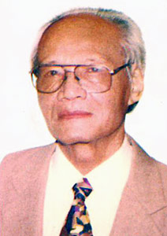

Tiểu Sử Tác Giả

hà thơ, nhà văn, soạn giả Hoàng Yến (ảnh) đã qua đời lúc 19 giờ 30 ngày 23-2, sau một thời gian lâm trọng bệnh, hưởng thọ 91 tuổi. Hoàng Yến tên khai sinh là Lê Hoàng Yến, sinh năm 1922 tại Đà Nẵng.
Ông tham gia cách mạng từ năm 1942. Sau toàn quốc kháng chiến năm 1946, ông nhập ngũ và về làm Thư ký toà soạn Báo Khu 4, sau đó ông có một thời gian chiến đấu trong đội hình đại đoàn 304 tham gia nhiều chiến dịch lớn, trong đó có chiến dịch Điện Biên Phủ. Năm 1957 ông là một trong những hội viên tham gia sáng lập Hội Nhà văn Việt Nam.

Dưới các bút danh Hoàng Yến, Thạch Tiên, Hoàng Lan, Hoàng Đức Anh, ông sáng tác khá nhiều, từ thơ, tiểu thuyết đến kịch bản sân khấu. Nhiều tác phẩm của ông đã ghi đậm dấu ấn trong lòng bạn đọc như tiểu thuyết lịch sử Câu thơ yên ngựa, Chân mây khép mở, tiểu thuyết Kẻ trộm nước trời… cùng nhiều kịch bản sân khấu khác. Ông đã giành được nhiều giải thưởng văn học - nghệ thuật gồm 3 huy chương vàng và 2 huy chương bạc cho các tác phẩm sân khấu.
Cách đây 2 năm, ông phải phẫu thuật ung thư đại tràng, kể từ đó sức khoẻ ông suy giảm dần cho đến khi mất. Linh cữu của ông quàn tại chùa Vĩnh Nghiêm, TPHCM. Lễ động quan vào 6 giờ 30 ngày 27-2, sau đó an táng tại Nghĩa trang Công viên Bình Dương.
T. VY